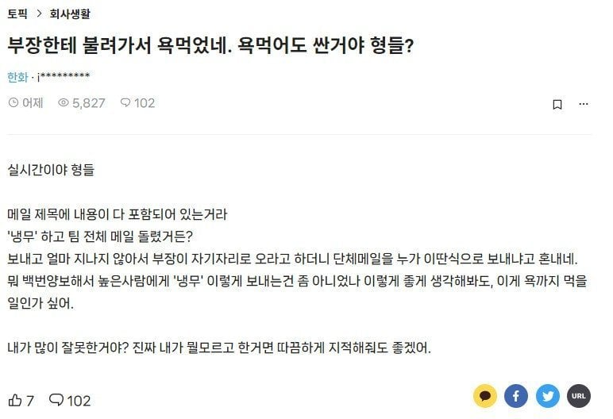

부장한테 왜 혼났는지 이해못한 블라인
댓글
오래전에 본거 같은데 냉무가 언제적꺼냐 요세애들은 모를듯
틀은 블라인드인데 글쓰는 방식은 쓰레드네 무슨 혼종임? 주작할거면 좀 맞추던가 ㅋㅋㅋㅋ
AI로 개 ㅈ같이 만드는게 요즘 거의 디폴트인듯
내용부터 포맷까지 다 AI로 주작중
냉무가머임
내용무.. 내용없음
FYI 랑 같은 맥락이긴 한데..
상급자가 하급자에게 메일 공유할때 하긴하지뭐..
냉무 하니까 그렇지 제곧내라고 정확하게 적었어야지!
담부턴 냉무대신 부장님 사랑합니다 적어서 보내라
우리 회사 부장 중에 냉무로 자주 보내는 사람 있긴 한데ㅋㅋ 받을 때마다 좀 그렇긴 해
한화는 어케 들어갔냐
저런애들도 회사 다니는데
ㅋㅋ 심지어 대기업에서?
쟤는 어떻게 저기에 들어갔대?
열무였으면 칭찬받았다
냉무 대신 ♡ 였으면 다른거 먹었다